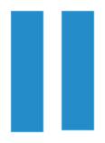

同一窗口纯原图
所选结果（点击图片打开原像素）

判断：Q1、Q2是相邻的竖向MOS栅指；蓝色为本轮AI重新观察的较完整主体候选，黄色为上一轮偏小的B1（此次仅用作对照）。未改已审横向POLY。
这次重新观察上下延伸及两侧范围，没有按固定倍数放大。照片中的网格是拍屏纹理，亮点是CT线索，均不直接决定栅体轮廓。新范围仍需验收，未写回正式POLY层。
蓝色矩形端边是候选主体范围，不是已确认的物理终止； 橙色表示真实端部过渡、扩宽/接触引出形状仍需核查，不表示非POLY。没有新增CT归属或连接判断。
两图保持各自原生坐标，未细配准，没有把AA暗线直接投影成POLY。AA的竖向沟道线索用于理解方向与阵列，不提供本轮精确边界。


纯规则图与原图轮廓分开保存，局部矩阵仅记录对象来源对应；没有公共全幅配准或物理尺寸含义。
